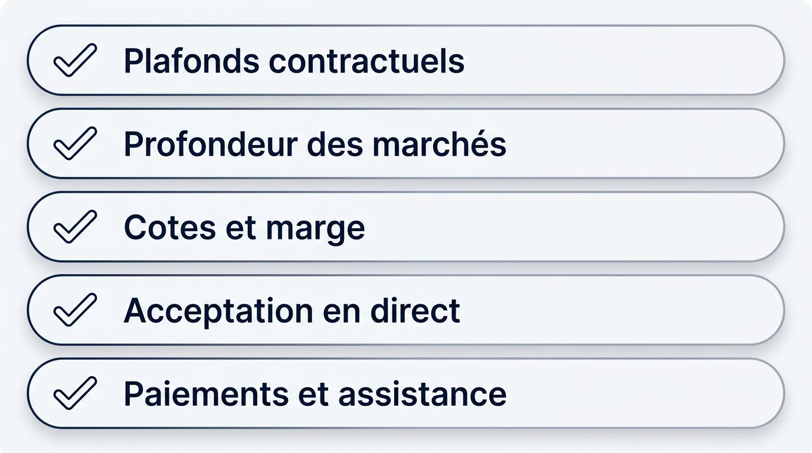
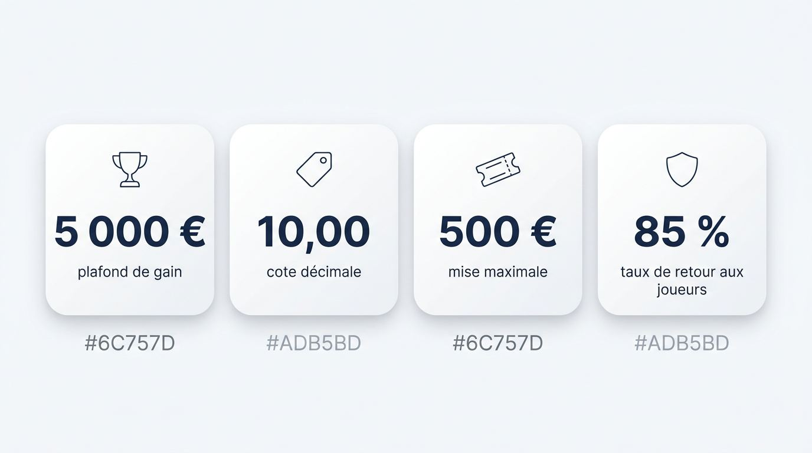
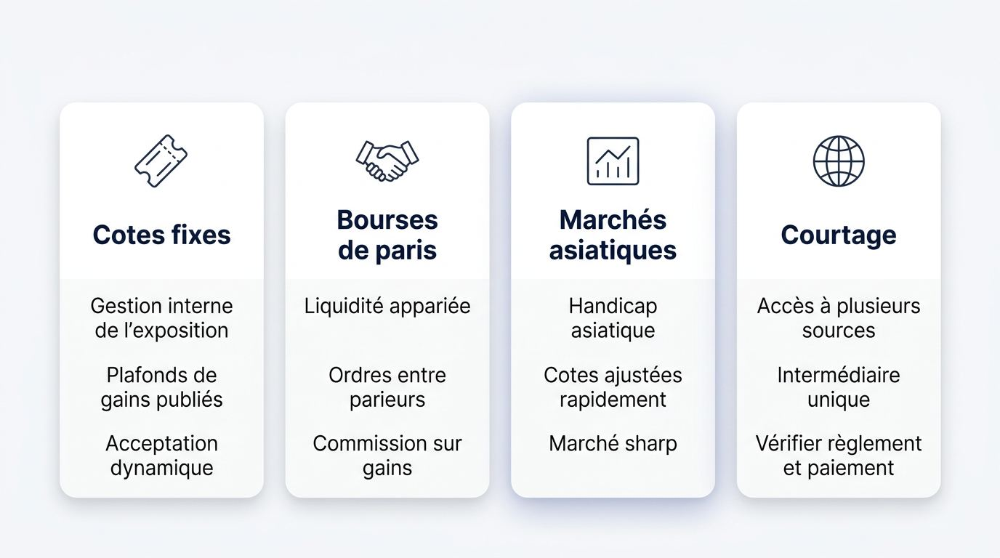
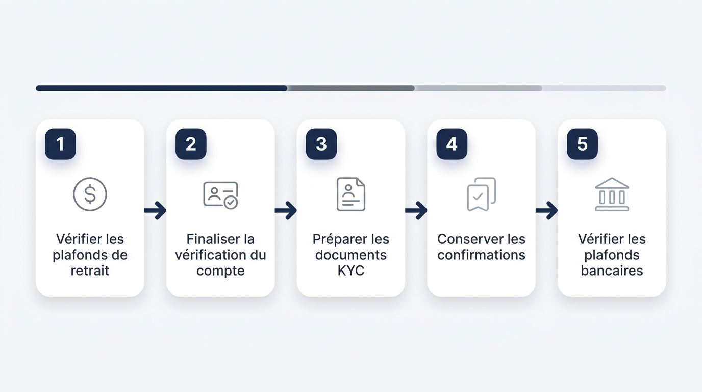
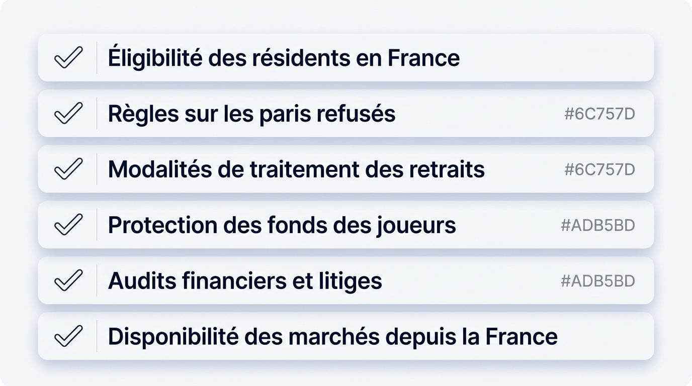

Comment évaluer un bookmaker sans limite de mise
La capacité à accepter une mise élevée se mesure d’abord dans les limites publiées et la profondeur des marchés, puis dans les cotes, les paiements et la vérification. Un bookmaker sans plafonnement ou un bookmaker qui accepte les gros paris doit pouvoir étayer cette promesse par des conditions vérifiables, au-delà de son discours commercial.

Notre évaluation s’appuie sur les conditions contractuelles, la profondeur des marchés, les cotes, la marge bookmaker, les règles de paiement et les fonctions directement observables. Ces éléments permettent d’estimer la chaîne complète, de l’acceptation du pari au retrait.
Les critères qui révèlent une vraie capacité de mise
Les plafonds de mise et de gain publiés constituent la première preuve permettant d’évaluer une plateforme avant d’y verser des fonds. Examinez ensuite les conditions réelles du marché et du paiement, car une limite dynamique peut modifier le montant accepté entre deux paris comparables.
Plafonds contractuels : recherchez la mise maximale chez le bookmaker, le gain maximum bookmaker, les règles de refus de paris et les clauses de restriction ou de fermeture de compte. Une règle claire vous permet de calculer le risque financier avant de valider un ticket.
Profondeur des marchés : vérifiez les montants proposés sur le football, le rugby, le tennis, le basket-ball et la Formule 1, particulièrement lors des grandes affiches de Ligue 1, des compétitions européennes, de Roland-Garros ou des phases finales. Les rencontres à forte audience absorbent généralement davantage de risque que les marchés de niche.
Cotes et marge : comparez les cotes décimales sur le pari envisagé et calculez la marge bookmaker implicite. Pour des mises répétées, le rendement théorique au joueur et le prix réellement obtenu influencent davantage le résultat qu’un bonus de bienvenue.
Acceptation en direct : observez la stabilité des paris sportifs en direct, la vitesse de validation et le maintien de la cote affichée. Les règles de cash out des paris sportifs doivent aussi préciser si une mise élevée peut être clôturée partiellement ou totalement pendant l’événement.
Paiements et assistance : contrôlez les plafonds de dépôt, de paiement et de retrait, puis la disponibilité du service client pour une activité significative. Un bookmaker à fortes cotes reste peu adapté si son retrait de gains impose un plafond faible ou une procédure imprécise.
Vérifier une promesse de mise illimitée avant de déposer
Une promesse de mise élevée devient crédible lorsque les clauses contractuelles, le marché disponible, l’éligibilité depuis la France et les modalités de retrait concordent. Commencez donc par les documents du site de paris, avant tout dépôt.
Consultez les conditions sur les limites de paris sportifs, les plafonds de gains, les paris refusés, les fermetures de compte et les restrictions applicables à une activité importante. Un bookmaker sans restriction de compte doit le confirmer dans ses règles, sans se limiter à une formule publicitaire.
Vérifiez le sport, le type de pari et la cote souhaitée à l’approche de l’événement. Un site de paris sans limite de mise peut appliquer une capacité différente selon la ligne choisie, l’heure et le risque déjà engagé sur la rencontre.
Confirmez l’éligibilité par pays et les règles de géolocalisation avant l’inscription, puis lisez les conditions de retrait. Un bookmaker non limitant qui ne prévoit pas clairement les paiements pour les résidents en France ne répond pas à votre besoin de grosse mise.
Simulez votre ticket jusqu’à l’étape de validation, sans financer davantage que nécessaire. Si le montant dépasse la limite applicable, le site peut refuser le pari et vous demander de réduire la mise.
Écart entre promesse et contrat. Une mention de paris « illimités » ne démontre aucune capacité sans plafond de mise, plafond de gain, règle de règlement et acceptation effective du ticket. Les conditions contractuelles priment sur le message marketing.
Pourquoi les limites varient selon le marché
Le montant accepté pour un même pari évolue selon l’événement, la cote, l’exposition totale de l’opérateur et les conditions propres au compte. Une limite de mise bookmaker observée un jour ne garantit donc pas la même capacité sur une autre ligne ou lors d’un marché plus exposé.

Les opérateurs peuvent documenter une restriction ou un refus par la prévention du jeu excessif, la lutte contre la fraude et le blanchiment, ou la maîtrise de leur exposition financière. Lorsque vos mises augmentent, paramétrez aussi vos propres limites de pertes et utilisez les dispositifs de jeu responsable ou d’auto-exclusion si votre pratique le nécessite.
Mise maximale, gain maximal et exposition sur un événement
La mise maximale correspond au plus grand montant accepté sur un pari, tandis que le gain maximal désigne le montant potentiel que la plateforme acceptera de régler. Ces deux plafonds produisent des résultats différents selon les cotes.
Un bookmaker à gros gains peut ainsi accepter une mise élevée à faible cote, tout en réduisant fortement le ticket sur une cote longue. La gestion de l’exposition par événement compte également. Si de nombreux paris couvrent déjà le même résultat, l’opérateur peut réduire la capacité disponible, y compris sur un marché pourtant identique.
Exemple compact, avec un plafond de gain de 5 000 € et une cote décimale de 10,00, la mise maximale s’établit à 500 €. Le calcul est le suivant : 5 000 € ÷ 10,00 = 500 €. À une cote plus faible, ce même plafond de gain autorise une mise plus importante. Vérifiez toutefois si l’opérateur calcule le plafond sur le gain net ou sur le retour total annoncé dans ses conditions.
Pour les offres agréées par l’ANJ, le taux de retour aux joueurs spécifique aux paris sportifs en ligne est plafonné à 85 %. Ce cadre influence la structure des marges, les cotes proposées et l’économie de capacité applicable aux paris à haute mise. Un bookmaker haute mise doit donc être évalué sur le ticket accepté et le gain maximum bookmaker applicable, plutôt que sur le seul montant affiché dans son interface.
Liquidité, évolution des cotes et limites liées au compte
La liquidité des paris sportifs correspond au montant de risque qu’un marché peut absorber à une cote donnée. Elle détermine directement la possibilité de placer un ticket important sans déplacer immédiatement les cotes.
Les grandes affiches de football ou de basket-ball offrent souvent une capacité supérieure aux marchés de niche. Ces derniers peuvent n’absorber que quelques centaines d’euros avant un mouvement de cote, selon la liquidité disponible. Le handicap asiatique peut servir d’indicateur d’un marché sharp, où la tarification réagit rapidement aux informations et aux volumes.
Les limites techniques relèvent du marché et de l’exposition sur l’événement. Les limites commerciales concernent le compte individuel, par exemple dans le cadre du contrôle du risque bookmaker, de la fraude, d’une activité automatisée, de schémas inhabituels, du trading sportif ou de vérifications liées au jeu excessif. Un bookmaker pour parieurs professionnels doit publier les motifs et les conséquences de ces contrôles.
Les signaux suivants méritent une attention particulière :
- baisse progressive des montants acceptés sur des paris comparables ;
- déplacement rapide des cotes après la saisie d’un montant important ;
- demandes documentaires répétées avant la validation ou le retrait ;
- traitement plus lent des retraits après une période de forte activité ;
- refus documentés sur certains paris sportifs en direct.
Planifiez votre exposition totale sur une rencontre, suivez le montant réellement engagé et fixez des limites de pertes volontaires avant d’augmenter vos mises.
Les modèles de paris adaptés aux mises élevées
Les mises élevées peuvent passer par plusieurs modèles de marché, dont la capacité dépend de mécanismes distincts. Les sites de paris à cotes fixes gèrent leur exposition en interne, les bourses reposent sur une liquidité appariée et les courtiers donnent accès à plusieurs sources de marché.

Le choix dépend de la liquidité, de l’acceptation des parieurs performants, du mouvement des cotes, des limites techniques, des limites commerciales et de la clarté du règlement. Ni les bookmakers français ni les plateformes internationales ne proposent une capacité identique sur chaque pari, même lorsqu’ils se présentent comme un bookmaker professionnel sans limite ou comme un bookmaker qui ne limite pas les mises.
Les bookmakers internationaux à cotes fixes
Les bookmakers étrangers à cotes fixes peuvent convenir à une grosse mise lorsque leur largeur de marché, leurs cotes et leurs plafonds de gains publiés correspondent au pari envisagé. L’acceptation reste toutefois dynamique, notamment selon le risque de l’événement, la maturité de la ligne, les mouvements de prix et les conditions du pari en direct.
Une offre plus large peut donner accès à davantage de marchés sportifs en ligne ou à des cotes de bookmaker étranger plus favorables sur certaines disciplines. La valeur doit cependant être vérifiée au moment de la validation. Un écart de cote disparaît vite si la plateforme réduit la mise, modifie la ligne ou limite l’acceptation pendant l’événement.
Les bonus de bienvenue et tout bonus bookmaker étranger doivent rester secondaires dans votre comparaison. Avant de retenir une plateforme, contrôlez le plafond de gain, la règle applicable au cash out, l’acceptation des paris en direct et les modalités de règlement. Vous saurez ainsi si la cote affichée peut réellement être prise au montant prévu et si un gain conséquent peut ensuite suivre la procédure de retrait annoncée.
Les bourses de paris sportifs
Pour une grosse mise, une bourse de paris sportifs vous confronte d’abord au montant réellement disponible chez les autres utilisateurs à la cote choisie. Les ordres sont appariés entre parieurs, au lieu d’être portés uniquement par un bookmaker traditionnel, ce qui fait de la liquidité non appariée la limite concrète de votre ticket.
Vous pouvez parier pour un résultat, en soutenant son occurrence, ou parier contre ce résultat, en prenant la position inverse. Ces deux types d’ordres forment les cotes du marché. Le trading sportif permet parfois de clôturer une position avant la fin d’un événement, selon les ordres disponibles à cet instant.
Une bourse reste soumise aux contraintes de capacité. Une mise importante peut être exécutée en plusieurs fractions, à des cotes différentes, ou rester partiellement non appariée. La commission prélevée sur les gains entre dans le prix effectif et doit être intégrée à la comparaison avec un bookmaker sharp ou avec une cote fixe. L’arbitrage des paris sportifs ne change ni les règles d’accès ni les limites de liquidité.
Avant de retenir ce modèle, contrôlez les éléments suivants :
- le montant immédiatement disponible à la cote visée ;
- la profondeur du carnet d’ordres sur le marché concerné ;
- la commission appliquée aux gains et son effet sur la cote nette ;
- les règles de règlement du pari ;
- les conditions de clôture d’une position avant le coup de sifflet final.
Les marchés asiatiques et les modèles de courtage
Pour engager des fonds importants sur les marchés asiatiques de paris sportifs ou auprès d’un courtier en paris sportifs, exigez d’abord des règles transparentes de règlement, de paiement et de plafonds. Ces modèles recherchent une tarification affinée et un accès plus large à la liquidité, avec une place souvent réduite pour les bonus.
Le handicap asiatique répartit l’avantage ou le désavantage entre deux équipes au moyen d’une ligne chiffrée. Il sert des marchés qui visent une exposition plus équilibrée et des cotes ajustées rapidement, caractéristiques d’un marché sharp. Cette approche peut intéresser les parieurs qui privilégient le prix et la profondeur de marché plutôt que les offres promotionnelles.
Un modèle de courtage peut centraliser l’accès à plusieurs sources de marché avec un seul intermédiaire. Cette intermédiation impose de vérifier les conditions de règlement applicables à chaque source, le financement du compte, le plafond de gain et les délais de retrait. Un bookmaker pour mises élevées doit pouvoir préciser ces éléments avant que vous lui confiiez un solde conséquent.
L’accès spécialisé s’accompagne parfois d’une interface moins orientée vers les fonctions récréatives et les bonus de bienvenue. Pour des montants élevés, la clarté du règlement et la procédure de paiement priment sur l’ampleur d’une offre commerciale.
Paiements, retraits et vérification pour des montants élevés
La capacité à récupérer vos fonds compte davantage que la commodité d’un dépôt lorsque vous envisagez une mise élevée. Avant de choisir un moyen de paiement, examinez le retrait de gains chez le bookmaker, sa limite de retrait et les contrôles susceptibles d’accompagner des flux importants.

Les vérifications renforcées liées à la lutte contre le blanchiment d’argent et à l’anti-fraude peuvent retarder un paiement. Un paiement par cryptomonnaie ne dispense pas de lire les plafonds, les justificatifs demandés et les conditions du service client. La liste suivante vous aide à préparer ces contrôles avant de constituer un solde élevé.
Plafonds de retrait et préparation au KYC
Le KYC, ou connaissance client, associe la vérification d’identité aux contrôles nécessaires pour traiter une activité financière significative. Un retrait important peut déclencher une demande complémentaire sur votre identité, l’origine des fonds ou la conformité du moyen de paiement. Cette préparation fait partie du fonctionnement normal d’un site de paris qui gère des gains élevés.
Suivez cette séquence avant de déposer un montant conséquent :
Vérifiez les plafonds de retrait par transaction, par jour, par mois et selon le moyen de paiement utilisé. Un bookmaker à gros gains peut prévoir une limite distincte pour chaque canal de retrait.
Finalisez la vérification de votre compte de bookmaker avant de demander un paiement élevé. Contrôlez aussi si le site impose l’utilisation du même moyen pour les dépôts et les retraits.
Préparez les documents susceptibles d’être demandés dans le cadre du KYC, notamment une pièce d’identité, un justificatif de domicile et, selon l’activité, des éléments sur l’origine des fonds.
Conservez les confirmations de transactions, l’historique de vos dépôts, les tickets de paris et les échanges avec le service client. Ces pièces créent une chronologie utile en cas de question sur un paiement ou de litige avec un opérateur non régulé.
Vérifiez auprès de votre banque les plafonds de votre carte bancaire française avant un dépôt important. Les contrôles anti-fraude peuvent affecter un débit élevé ou un paiement entrant, et vos justificatifs faciliteront l’examen de l’opération.
Les risques liés à un bookmaker non régulé incluent des conditions de retrait imprécises ou des recours plus difficiles à exercer. Avant de laisser croître votre solde, assurez-vous que le calendrier de paiement et les preuves à fournir sont clairement documentés.
Accès aux plateformes et conditions applicables en France
Avant toute ouverture de compte, confirmez que la plateforme accepte les résidents en France, qu’elle prévoit des conditions de paiement applicables à votre situation et qu’elle expose ses garanties de traitement des fonds. L’accessibilité technique d’un site ne suffit pas à établir votre éligibilité contractuelle.

L’Autorité nationale des jeux, ou ANJ, encadre les paris sportifs en ligne autorisés en France. L’ARJEL désigne l’ancienne autorité et reste une référence historique dans la réglementation française des jeux d’argent en ligne. Un bookmaker légal en France dispose d’un agrément ANJ, tandis que les bookmakers étrangers titulaires d’une licence internationale relèvent d’un cadre de fonctionnement distinct.
Ces cadres diffèrent pour l’ouverture du compte, l’offre de marchés, le traitement des fonds et les voies de recours. Un site de paris sportifs sans limite affiché peut proposer une sélection différente selon votre pays de résidence. Depuis la France, les paris sur l’esport restent interdits et la liste des supports de paris autorisés a été renouvelée avec effet au 1er mars 2024, ce qui peut modifier les compétitions ou résultats disponibles.
N’utilisez pas de VPN, de masquage de géolocalisation, de fausse adresse de résidence ou tout autre moyen de contourner les règles d’éligibilité par pays. Ces pratiques peuvent compromettre l’accès au compte et le règlement des gains.
Avant de financer un compte, vérifiez les points suivants :
- l’éligibilité explicite des résidents en France dans les conditions générales ;
- les règles sur les paris refusés, les restrictions de compte, l’annulation d’un pari et les plafonds de gain ;
- les modalités de traitement des retraits et les éventuels frais ;
- les dispositions de protection des fonds des joueurs, y compris leur séparation des fonds d’exploitation lorsque celle-ci est annoncée ;
- l’existence d’audits financiers et d’une procédure indépendante de règlement des litiges ;
- la disponibilité réelle des marchés depuis la France, y compris les restrictions propres à certains sports.
Vérification préalable d’accès. Confirmez votre éligibilité depuis la France et les conditions contractuelles de paiement avant de financer le compte.
Les points essentiels d’un bookmaker sans limite de mise avant de miser gros
Une grosse mise ne doit être engagée qu’après confirmation de la capacité d’acceptation, de la qualité du marché, du retrait et de l’éligibilité depuis la France.
Les promesses d’un bookmaker sans limite doivent être confrontées aux plafonds publiés, à la gestion de l’exposition par événement et à la liquidité réellement disponible sur votre pari.
Les cotes, la profondeur du marché, l’acceptation des paris sportifs en direct et la clarté du règlement déterminent la valeur pratique d’une plateforme pour mises élevées.
Les plafonds de retrait, la préparation au KYC, la cohérence des moyens de paiement et les garanties de fonds doivent être vérifiés avant de constituer un solde important.
Une limite dynamique peut modifier le montant accepté entre deux tickets comparables. Contrôlez donc les conditions applicables au pari précis que vous souhaitez placer.
Confirmez l’éligibilité en France et les clauses contractuelles avant l’inscription ou le dépôt, quelle que soit la capacité de mise affichée.
Choisissez une plateforme adaptée à votre mise
Le bon choix repose sur une capacité de mise, un plafond de paiement, une liquidité et une éligibilité française vérifiables pour votre pari précis. Utilisez ce comparatif de bookmakers pour gros parieurs afin de comparer les meilleurs sites selon votre mise prévue et votre gain potentiel. Un bookmaker qui ne limite pas les mises doit le démontrer au moment où vous souhaitez parier.
Questions fréquentes sur les mises élevées en France
Ces questions fréquentes répondent à des situations concrètes que les joueurs peuvent rencontrer depuis la France après la validation d’un pari ou lors d’un retrait important.
Un pari déjà accepté peut-il être annulé par un bookmaker ?
Oui, si les conditions prévoient une erreur manifeste, une irrégularité ou une règle de marché spécifique.
Que faire si un retrait important reste en attente ?
Vérifiez votre KYC, le plafond applicable et les documents demandés, puis sollicitez le service client.
Une banque française peut-elle bloquer un dépôt important vers une plateforme de paris ?
Oui, une banque ou un émetteur de carte peut examiner ou bloquer un dépôt selon ses plafonds et contrôles anti-fraude.